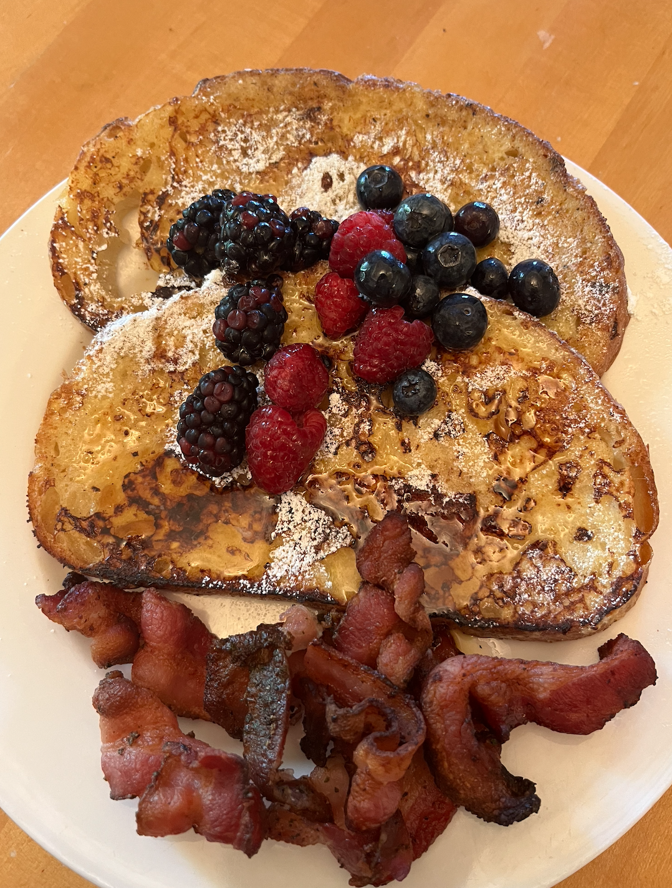

Easy French Toast

This has to be one of my favorite breakfasts of all time. It is crutial for the yummy factor to use thick bread of pretty much any kind: white, whole wheat, brioche, cinnamon-raisin, Italian or French. Be sure not to put the bread on the pan until it is completely hot.
Ingredients
- 2/3 cup milk (dairy or nut/oat)
- 2 large eggs
- 1 teaspoon vanilla extract
- 1/4 teaspoon ground cinnamon
- salt to taste
- 6 thick slices of bread
- 1 tablespoon unsalted butter, or more as needed
Directions
- Whisk milk, eggs, vanilla, cinnamon, and salt together in a small bowl then transfer to a shallow bowl.
- Lightly butter a frying pan or griddle and heat over medium-high heat.
- Dunk bread in the egg mixture, soaking both sides. Transfer to the hot skillet and cook until golden, 3 to 4 minutes per side. Serve hot.